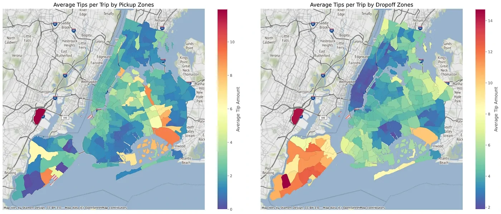

Spatiotemporal Hotspot Detection in NYC Taxi Data
Finding where and when NYC taxi pickups cluster, using Scala and Apache Spark.

Overview
NYC taxi trips provide a way to study how pickup activity varies across a city and over time. This project combined spatial joins with statistical hotspot detection to identify regions with frequent pickups and location–day cells with unusually high activity.
Approach
- Implemented spatial joins in Scala and Spark SQL to measure taxi pickup density across regions.
- Mapped pickup coordinates and timestamps to a geographic grid with daily time intervals.
- Computed Getis–Ord Gi* scores to identify unusually high pickup activity across nearby cells.
- Used distributed aggregations and cached cell counts to rank the top 50 location–day hotspots.
Implementation
Two analyses addressed different questions. Hot-zone analysis counted pickups inside rectangular regions. Hot-cell analysis assigned pickups to a geographic grid and daily intervals, then calculated Getis–Ord Gi* scores from neighboring cells. The Spark workflow cached cell counts and returned the 50 highest-scoring hotspots.
Reflections
Neighborhood joins were a central processing challenge. Each cell had to be matched with nearby cells before its hotspot score could be calculated, making the cost of the join an important part of the implementation.